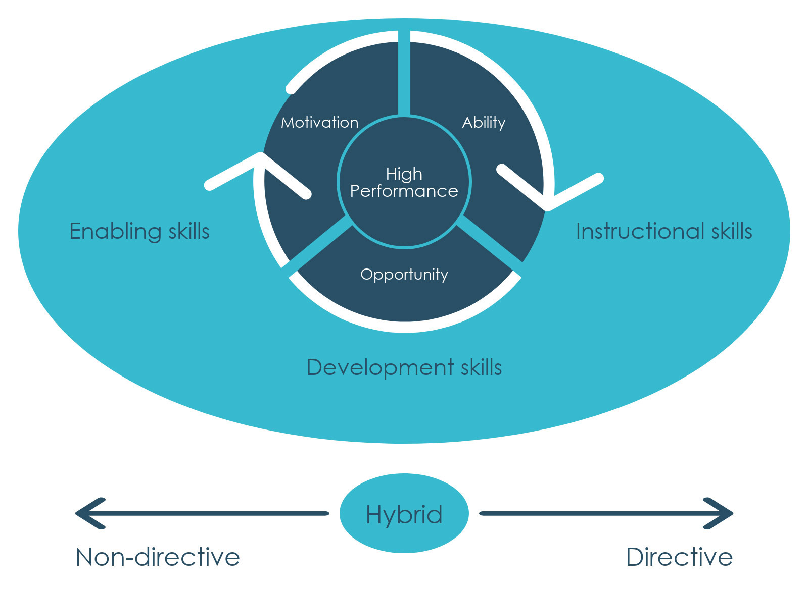

Coaching and mentoring environment and benefits
1 The coaching & mentoring environment
The diagram above sets out the main tenets of coaching, with the objective of coaching at the centre – to improve performance or achieve and sustain high performance at work. To achieve that, the coach will be focusing, with the coachee, on their motivation, their ability (or competence) and on creating opportunities to enable the coachee to achieve his or her potential. The coach will apply enabling skills and instructional skills, whilst developing the coachee. Instructional skills tend to be more directive and enabling skills are very much about facilitating the coachee to find solutions to issues themselves through questions (ie avoiding the temptation to offer advice). The reality is that many coaches operate in a hybrid area – combining a facilitative or enabling approach with some elements of directive instruction or advice. However, in coaching, the coach should aim to operate predominantly in a facilitative, questioning mode.
When we ask someone a question, it leads that person to focus on whatever it is that the question relates to. It brings the issue into the person’s awareness, which leads them to search their mind for material that is relevant to answering the question. Even if they do not have an answer, the brain will focus on that issue and they will start to notice things that are relevant to answering the question. This principle is similar to what happens when you need, say, to make a purchase. For example, if your microwave breaks down and you decide you need a new one you will have tacitly implied a question: where and how can I get a new one? You might be looking at your daily paper and notice a major store with a sale advertising microwaves. The chances are that you would not have even noticed the advert had your microwave not needed replacing.
The benefits of a taking a facilitative approach include:
- enabling a fuller understanding of problems or issues
- helping staff to take responsibility for finding and implementing solutions to problems
- encouraging people to think for themselves
- defusing potentially confrontational situations
- getting co-operation (as solutions come from the coachee/mentee)
- encouraging reflection about job performance.